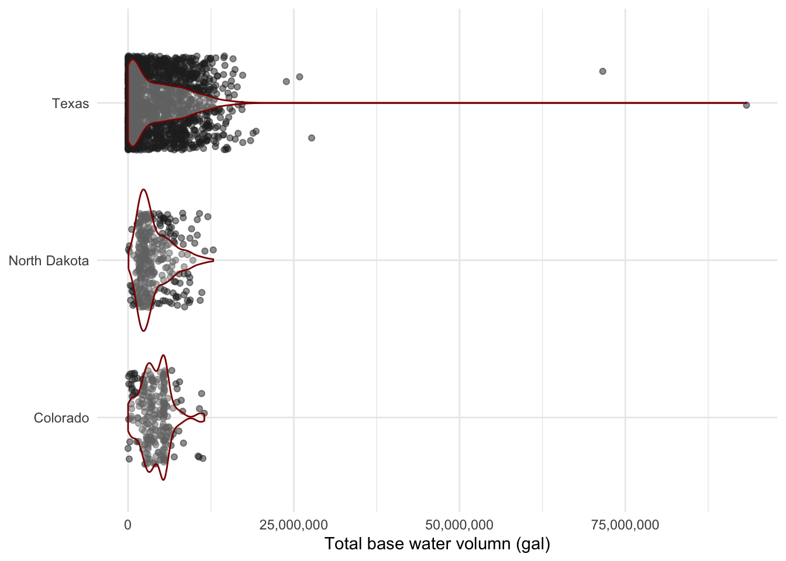

Code
library(here)
library(usdata)
library(janitor)
library(tidyverse)Data wrangling with the {tidyverse}
library(here)
library(usdata)
library(janitor)
library(tidyverse)fracking <- read_csv(here("week1", "data", "registryupload_1.csv"))# Look at the column names
names(fracking) [1] "pKey" "JobStartDate"
[3] "JobEndDate" "APINumber"
[5] "StateNumber" "CountyNumber"
[7] "OperatorName" "WellName"
[9] "Latitude" "Longitude"
[11] "Projection" "TVD"
[13] "TotalBaseWaterVolume" "TotalBaseNonWaterVolume"
[15] "StateName" "CountyName"
[17] "FFVersion" "FederalWell"
[19] "IndianWell" "Source"
[21] "DTMOD" # Look at the number of rows/columns
dim(fracking)[1] 100000 21# Look at the structure of the dataframe
str(fracking)spc_tbl_ [100,000 × 21] (S3: spec_tbl_df/tbl_df/tbl/data.frame)
$ pKey : chr [1:100000] "448c1dab-c7fd-4e07-9d6f-e3b1cf64b708" "f66add2e-8ea8-4843-9388-24725b5d37c1" "95f0904c-2556-4912-9f5a-34913ba57625" "5a9513e7-b79f-4488-9f64-fa0960e595f3" ...
$ JobStartDate : chr [1:100000] "5/1/1955 12:00:00 AM" "5/19/1982 12:00:00 AM" "2/7/1995 12:00:00 AM" "6/11/1996 12:00:00 AM" ...
$ JobEndDate : chr [1:100000] "5/1/1955 12:00:00 AM" "5/19/1982 12:00:00 AM" "2/7/1995 12:00:00 AM" "6/11/1996 12:00:00 AM" ...
$ APINumber : chr [1:100000] "42317372620000" "49009219470000" "49009228850000" "42335355480000" ...
$ StateNumber : chr [1:100000] "42" "49" "49" "42" ...
$ CountyNumber : chr [1:100000] "317" "009" "009" "335" ...
$ OperatorName : chr [1:100000] "Pioneer Natural Resources" "Chesapeake Operating, Inc." "Chesapeake Operating, Inc." "Energen Resources Corporation" ...
$ WellName : chr [1:100000] "Rogers 42 #5" "WILLIAM VALENTINE 1" "LIZARD HEAD 1-8H RE" "North Westbrook Unit/Well No. 3032" ...
$ Latitude : num [1:100000] 32.3 43 42.9 32.4 31.3 ...
$ Longitude : num [1:100000] -101.9 -106 -105.4 -101 -96.4 ...
$ Projection : chr [1:100000] "NAD27" "NAD27" "NAD27" "NAD27" ...
$ TVD : num [1:100000] NA NA NA NA NA ...
$ TotalBaseWaterVolume : num [1:100000] NA NA NA NA NA ...
$ TotalBaseNonWaterVolume: num [1:100000] NA NA NA NA NA 0 NA NA NA NA ...
$ StateName : chr [1:100000] "Texas" "WYOMING" "WYOMING" "Texas" ...
$ CountyName : chr [1:100000] "Martin" "CONVERSE" "CONVERSE" "Mitchell" ...
$ FFVersion : num [1:100000] 1 1 1 1 1 3 1 1 1 1 ...
$ FederalWell : logi [1:100000] FALSE FALSE FALSE FALSE FALSE FALSE ...
$ IndianWell : logi [1:100000] FALSE FALSE FALSE FALSE FALSE FALSE ...
$ Source : logi [1:100000] NA NA NA NA NA NA ...
$ DTMOD : logi [1:100000] NA NA NA NA NA NA ...
- attr(*, "spec")=
.. cols(
.. pKey = col_character(),
.. JobStartDate = col_character(),
.. JobEndDate = col_character(),
.. APINumber = col_character(),
.. StateNumber = col_character(),
.. CountyNumber = col_character(),
.. OperatorName = col_character(),
.. WellName = col_character(),
.. Latitude = col_double(),
.. Longitude = col_double(),
.. Projection = col_character(),
.. TVD = col_double(),
.. TotalBaseWaterVolume = col_double(),
.. TotalBaseNonWaterVolume = col_double(),
.. StateName = col_character(),
.. CountyName = col_character(),
.. FFVersion = col_double(),
.. FederalWell = col_logical(),
.. IndianWell = col_logical(),
.. Source = col_logical(),
.. DTMOD = col_logical()
.. )
- attr(*, "problems")=<externalptr> # Summarize the variables
summary(fracking) pKey JobStartDate JobEndDate APINumber
Length:100000 Length:100000 Length:100000 Length:100000
Class :character Class :character Class :character Class :character
Mode :character Mode :character Mode :character Mode :character
StateNumber CountyNumber OperatorName WellName
Length:100000 Length:100000 Length:100000 Length:100000
Class :character Class :character Class :character Class :character
Mode :character Mode :character Mode :character Mode :character
Latitude Longitude Projection TVD
Min. : 25.2 Min. : -171 Length:100000 Min. :0.000e+00
1st Qu.: 31.7 1st Qu.: -103 Class :character 1st Qu.:6.050e+03
Median : 33.6 Median : -101 Mode :character Median :8.042e+03
Mean : 39.4 Mean : -62 Mean :6.009e+04
3rd Qu.: 40.0 3rd Qu.: -98 3rd Qu.:1.064e+04
Max. :376223.0 Max. :3810848 Max. :1.185e+09
NA's :30136
TotalBaseWaterVolume TotalBaseNonWaterVolume StateName
Min. : 0 Min. :-11525891 Length:100000
1st Qu.: 415454 1st Qu.: 0 Class :character
Median : 2114427 Median : 0 Mode :character
Mean : 3227247 Mean : 148662
3rd Qu.: 4960074 3rd Qu.: 0
Max. :93277966 Max. :202816628
NA's :30158 NA's :48176
CountyName FFVersion FederalWell IndianWell
Length:100000 Min. :1.000 Mode :logical Mode :logical
Class :character 1st Qu.:1.000 FALSE:95786 FALSE:99999
Mode :character Median :2.000 TRUE :4214 TRUE :1
Mean :1.564
3rd Qu.:2.000
Max. :3.000
Source DTMOD
Mode:logical Mode:logical
NA's:100000 NA's:100000
# View the first couple of rows
head(fracking)# A tibble: 6 × 21
pKey JobStartDate JobEndDate APINumber StateNumber CountyNumber OperatorName
<chr> <chr> <chr> <chr> <chr> <chr> <chr>
1 448c1… 5/1/1955 12… 5/1/1955 … 42317372… 42 317 Pioneer Nat…
2 f66ad… 5/19/1982 1… 5/19/1982… 49009219… 49 009 Chesapeake …
3 95f09… 2/7/1995 12… 2/7/1995 … 49009228… 49 009 Chesapeake …
4 5a951… 6/11/1996 1… 6/11/1996… 42335355… 42 335 Energen Res…
5 36368… 12/13/2001 … 12/13/200… 42395313… 42 395 XTO Energy/…
6 3af8c… 3/29/2023 1… 4/19/2002… 34067217… 34 067 EAP Ohio LLC
# ℹ 14 more variables: WellName <chr>, Latitude <dbl>, Longitude <dbl>,
# Projection <chr>, TVD <dbl>, TotalBaseWaterVolume <dbl>,
# TotalBaseNonWaterVolume <dbl>, StateName <chr>, CountyName <chr>,
# FFVersion <dbl>, FederalWell <lgl>, IndianWell <lgl>, Source <lgl>,
# DTMOD <lgl>fracking_clean <- fracking %>%
clean_names() %>%
mutate(job_start_date = str_remove(job_start_date, " AM")) %>%
mutate(datetime_start = mdy_hms(job_start_date)) %>%
mutate(year = year(datetime_start)) %>%
select(datetime_start, year, state_name, well_name, total_base_water_volume) %>%
mutate(state_name = str_to_title(state_name)) %>%
filter(!str_detect(state_name, pattern = "\\?")) %>%
mutate(state_name = ifelse(test = str_length(state_name) == 2,
yes = abbr2state(state_name),
no = state_name)) %>%
mutate(state_name = case_when(
state_name == "Colordao" ~ "Colorado",
state_name == "Loiusiana" ~ "Louisiana",
state_name == "Louisianna" ~ "Louisiana",
state_name == "Lousiana" ~ "Louisiana",
state_name == "New Mexcio" ~ "New Mexico",
state_name == "Norh Dakota" ~ "North Dakota",
state_name == "Norht Dakota" ~ "North Dakota",
state_name == "North Dakota" ~ "North Dakota",
state_name == "North Dakata" ~ "North Dakota",
state_name == "North Dakotta" ~ "North Dakota",
state_name == "Noth Dakota" ~ "North Dakota",
state_name == "Pennslvania" ~ "Pennsylvania",
state_name == "Pennsylavania" ~ "Pennsylvania",
state_name == "Pennsylvanya" ~ "Pennsylvania",
state_name == "Penssylvania" ~ "Pennsylvania",
state_name == "Texasa" ~ "Texas",
state_name == "Texs" ~ "Texas",
state_name == "West Viginia" ~ "West Virginia",
state_name == "Wyominng" ~ "Wyoming",
TRUE ~ state_name)) %>%
filter(!state_name %in% c("Beaver",
"Beckham",
"Harper",
"Hemphill",
"Midland",
"Red River",
"Roosevelt",
"Rusk", "
State",
"Ward")) %>%
mutate(state_abb = usdata::state2abbr(state_name)) %>%
relocate(state_abb, .after = state_name) %>%
rename(total_base_water_volume_gal = total_base_water_volume) %>%
drop_na(total_base_water_volume_gal) %>%
arrange(datetime_start)fracking_clean %>%
filter(state_name %in% c("Texas", "Colorado", "North Dakota")) %>%
filter(year == 2015) %>%
group_by(state_name) %>%
ggplot(aes(x = state_name, y = total_base_water_volume_gal)) +
geom_jitter(width = 0.3, alpha = 0.5, color = "gray15") +
geom_violin(color = "red4", alpha = 0.3) +
scale_y_continuous(labels = scales::label_comma()) +
labs(y = "Total base water volumn (gal)") +
coord_flip() +
theme_minimal() +
theme(axis.title.y = element_blank())